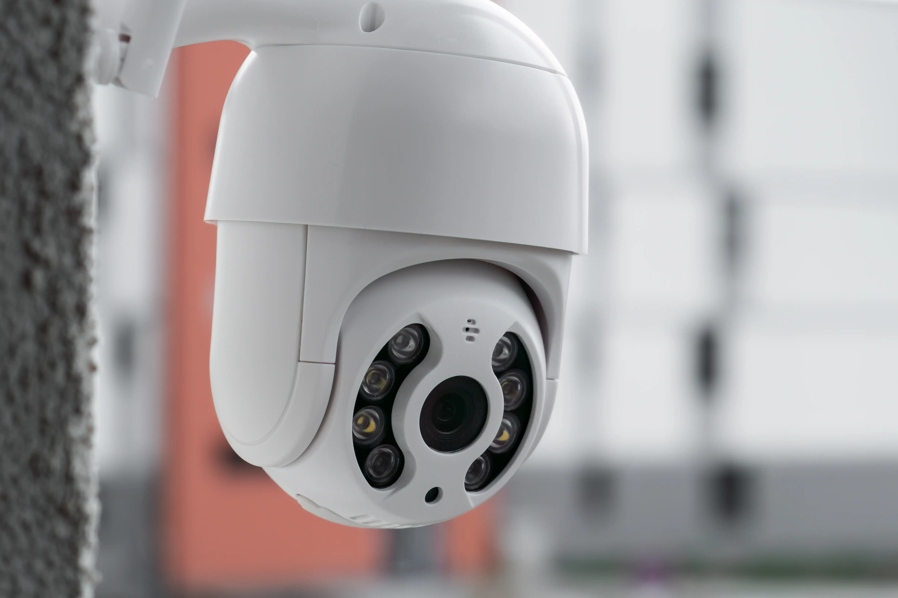

معاينة مجانية، تركيب كاميرات IP وأنظمة DVR وNVR، مشاهدة عن بعد من هاتفك، وعقود صيانة سنوية تراعي رطوبة الساحل، بخبرة 27 عامًا

تبحث عن شركة كاميرات مراقبة في الإسكندرية تصمم لك نظامًا يحمي محلك أو شركتك فعلًا، لا مجرد كاميرات معلقة على الحائط؟ نيو جولدن أوفيس تعمل في تجهيز وخدمة منشآت الإسكندرية منذ 27 عامًا، من مقرنا الفعلي: 26 عبد المنعم سند، الإبراهيمية، باب شرق. نغطي المنظومة كاملة: معاينة الموقع مجانًا، اختيار أنواع الكاميرات المناسبة، التمديدات والتركيب، أجهزة التسجيل DVR وNVR، ضبط المتابعة من هاتفك، ثم الضمان وعقود الصيانة السنوية.
في تجهيز وخدمة الشركات والمحلات، لا في بيع الأجهزة فقط.
قبل أي عرض سعر، لأن التسعير الجاد يبدأ من فهم المكان.
توريد وتركيب وبرمجة وتدريب وصيانة من جهة واحدة.
خامات تتحمل رطوبة البحر والإضاءة الخلفية القوية على واجهات الكورنيش.
تنقل الصورة رقميًا بجودة عالية، مع تحليل حركة وميزات ذكية. الخيار الأول للمنشآت التي تريد توسعًا مستقبليًا.
كاميرات IP وواي فايأنظمة على الكابلات المحورية التقليدية بجودة HD وتكلفة اقتصادية.
تتحرك أفقيًا ورأسيًا وتقرب الصورة، مثالية للمخازن والجراجات والساحات الواسعة.
تحتفظ بالألوان في الإضاءة المنخفضة، فارق جوهري لتمييز لون سيارة أو ملابس ليلًا.
معالجة الإضاءة الخلفية WDR أهم مواصفة للمنشآت السكندرية المطلة على البحر: بدونها يظهر الداخل من الباب مجرد ظل أسود أمام الضوء، ومعها يتوازن الداخل والخارج معًا.
المحلات على الكورنيش وفي المناطق التجارية والسياحية لها طبيعة خاصة: حركة زبائن كثيفة، واجهات مفتوحة، وموسم صيفي يتضاعف فيه الازدحام. نظام كاميرات مراقبة للمحلات بالإسكندرية يجب أن يتعامل مع هذا كله: كاميرات تلتقط الوجوه بوضوح عند المداخل رغم الإضاءة الخلفية القوية القادمة من البحر، وتغطية للممرات ونقاط الدفع، وتسجيل يحتفظ بأيام الذروة كاملة.
في مواسم الصيف تحديدًا، الازدحام يرفع مخاطر السرقات الخاطفة والخلافات أمام المحل، فيصبح التسجيل الواضح دليلك الأول. نصمم التغطية بحيث تخدمك في اليوم العادي وفي ذروة أغسطس بنفس الكفاءة.
| وجه المقارنة | هيكفيجن Hikvision | داهوا Dahua |
|---|---|---|
| الانتشار وقطع الغيار | الأوسع انتشارًا، قطع غيار متوفرة بسهولة | انتشار واسع وتوفر جيد جدًا |
| تنوع الموديلات | تشكيلة ضخمة من الاقتصادي حتى الاحترافي | تشكيلة واسعة بأسعار تنافسية |
| الملاءمة | مشروعات تحتاج أوسع خيارات وميزات | مشروعات تريد قيمة قوية مقابل السعر |
الأهم من اسم الماركة أن يكون الجهاز أصليًا وبضمان رسمي، ونساعدك في المفاضلة حسب ميزانيتك واحتياج موقعك الفعلي.
تغطية مدخل ونقطة دفع وصالة عرض بعدد كاميرات مدروس وسعة تخزين تناسب أيام الذروة.
تغطية المداخل والاستقبال والممرات، مع صلاحيات مستخدمين متدرجة ومشاهدة عن بعد.
تغطية الأسوار والمداخل والحديقة بكاميرات خارجية تتحمل مناخ الساحل.
مزيج كاميرات ثابتة وPTZ للمساحات الواسعة مع تخزين ممتد وربط متعدد المواقع.
مع أنظمة IP والربط الصحيح بالشبكة، تفتح تطبيق الموبايل فتشاهد البث الحي وتسترجع التسجيلات وتستقبل تنبيهات الحركة أينما كنت. انقطاع الإنترنت لا يوقف التسجيل لأنه محلي على جهاز DVR أو NVR، ووحدة UPS تُبقي التسجيل مستمرًا أثناء انقطاعات الكهرباء القصيرة.
وزاوية يتجاهلها معظم من يركب الكاميرات في مصر: الكاميرا المتصلة بالإنترنت جهاز شبكي يمكن اختراقه إذا تُرك بإعداداته الافتراضية. في تركيباتنا نغيّر كل كلمات المرور الافتراضية من لحظة التشغيل الأول، ونؤمّن الوصول عن بعد بالقنوات المشفرة الموثوقة بدل فتح منافذ عشوائية.
كلمنا على واتساب وهنرد عليك فورًا بكل تفاصيل كاميرات المراقبة في الإسكندرية
واتساب مباشرأو اتصل على 01227392074